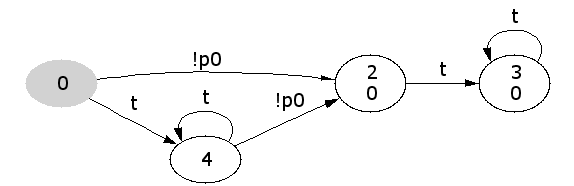
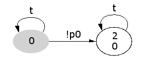

This piece of software provides a C++ implementation for an algorithm that converts a linear temporal logic formula to a generalised Büchi automaton. The algorithm comes from
R. Gerth, D. Peled, Y. Vardi, and P. Wolper.
Simple on-the-fly automatic verification of linear temporal logic. PSTV'95, Fifteenth International Symposium on PROTOCOL SPECIFICATION, TESTING AND VERIFICATION, Warsaw, Poland, 1995.
The resulting automaton may be used, for instance, in model checking, where it represents a property to be verified from a model (e.g. a Petri net).
The implementation is Copyright © 1999 Mauno Rönkkö <mauno.ronkko@cs.utu.fi>. The original copyright statement follows:
This product contains free software; you can redistribute it and/or modify it under the terms of the GNU General Public License as published by the Free Software Foundation; either version 2 of the License, or (at your option) any later version. These terms also apply to any hardware schemas and any other information presented in the www-pages below.
This product information is distributed in the hope that it will be useful, but WITHOUT ANY WARRANTY; without even the implied warranty of MERCHANTABILITY or FITNESS FOR A PARTICULAR PURPOSE. This also applies to any hardware schemas and any other information described in the www-pages below. See the GNU General Public License for more details. You should be able to read the GNU General Public License via the above link; if not, write to the Free Software Foundation, Inc., 675 Mass Ave, Cambridge, MA 02139, USA.
Enhancements and packaging are © 1999-2001,2004 Heikki Tauriainen <heikki.tauriainen@hut.fi>, and © 2001,2002,2004 Marko Mäkelä <marko.makela@hut.fi>.
The translator is designed to be invoked as a subprocess. It parses a linear temporal logic from standard input and writes a corresponding generalised Büchi automaton to standard output, and exits. Both the input and output format are based on prefix notation that facilitate straightforward recursive-descent parsing.
The grammar is presented in Backus-Naur Form, one grammar rule per line. Comments delimited by the symbols /* and */ are not part of the formal grammar. Non-terminal symbols are enclosed within single quotes or presented as Flex-style regular-expressions.
| <f> ::= | 't' |
/* true */ |
| <f> ::= | 'f' |
/* false */ |
| <f> ::= | 'p'[0-9]+ |
/* proposition */ |
| <f> ::= | '!'
<f> |
/* negation */ |
| <f> ::= | '|'
<f>
<f> |
/* disjunction */ |
| <f> ::= | '&'
<f>
<f> |
/* conjunction */ |
| <f> ::= | 'i'
<f>
<f> |
/* implication:
"i <f1> <f2>" is short-hand for
"| ! <f1> <f2>" */ |
| <f> ::= | 'e'
<f>
<f> |
/* equivalence */ |
| <f> ::= | '^'
<f>
<f> |
/* exclusive disjunction (xor) */ |
| <f> ::= | [ \t\n\r\v\f] <f> |
/* white space is ignored */ |
| <f> ::= | <f> [ \t\n\r\v\f] |
/* white space is ignored */ |
| <f> ::= | 'X'
<f> |
/* next */ |
| <f> ::= | 'F'
<f> |
/* finally, eventually */ |
| <f> ::= | 'G'
<f> |
/* globally, henceforth */ |
| <f> ::= | 'U'
<f>
<f> |
/* until */ |
| <f> ::= | 'V'
<f>
<f> |
/* release */ |
| <space> ::= | [ \n]+ |
|
| <gba> ::= | [0-9]+ <space>
[0-9]+
<states>
|
/* first the number of states, then the number of acceptance sets (if 0, all states are accepting) */ |
| <states> ::= | /* empty */ | |
| <states> ::= | <states> <space> <state> | |
| <state> ::= | [0-9]+ <space>
<initial?> <space>
<acceptance sets> '-1'
<transitions> '-1' |
/* state identifiers can be arbitrary unsigned integers */ |
| <initial?> ::= | '0' |
/* not an initial state */ |
| <initial?> ::= | '1' |
/* initial state (exactly one state must be initial) */ |
| <acceptance sets> ::= | /* empty */ | |
| <acceptance sets> ::= | <acceptance sets>
[0-9]+ <space> |
/* acceptance set identifiers can be arbitrary unsigned integers */ |
| <transitions> ::= | /* empty */ | |
| <transitions> ::= | <transitions> <space> <transition> | |
| <transition> ::= | [0-9]+ <space>
't' |
/* constantly enabled transition to a state */ |
| <transition> ::= | [0-9]+ <space>
<gate> |
/* conditionally enabled transition to a state */ |
| <gate> ::= | 'p'[0-9]+ |
/* proposition */ |
| <gate> ::= | '!' <space>
<gate> |
/* negation */ |
| <gate> ::= | '|' <space>
<gate> <space>
<gate> |
/* disjunction */ |
| <gate> ::= | '&' <space>
<gate> <space>
<gate> |
/* conjunction */ |
Note that currently LBT does not generate disjunctions on gate conditions. Also, the initial state is always numbered 0.
A simple tool, lbt2dot, converts the generalised Büchi automata descriptions output by the translator to a format viewable with GraphViz, a visualisation tool for directed graphs. Gate expressions are presented as edge labels, and state and acceptance set identifiers are presented as node labels. The node corresponding to the initial state is shaded.
Here is a sample run involving the filter: echo '! G p0' |
lbt | lbt2dot | dotty -.

In the picture above, constructed with the command echo '! G p0'
| lbt | lbt2dot | dot -Tpng -Grankdir=LR -Nfontname=Verdana
-Efontname=Verdana > notgp0.png, the automaton has 4 states,
identified by the numbers 0, 2, 3, and 4. The initial state is 0, and
there is one acceptance set, identified by the number 0. All states
except states 0 and 4 belong to this acceptance set.
The above example illustrates that the translation generates
unnecessary states. The algoritm never generates loops to the initial
state. Clearly, this automaton could be reduced to two states with
t-labeled self-loops:

You can download the code from http://www.tcs.hut.fi/maria/src/. You will need C and C++ compilers such as GCC for compiling the source code.
For the convenience of Windows users, we provide executable files that were compiled with gcc-2.95.2 configured as a cross-compiler for the mingw target platform.